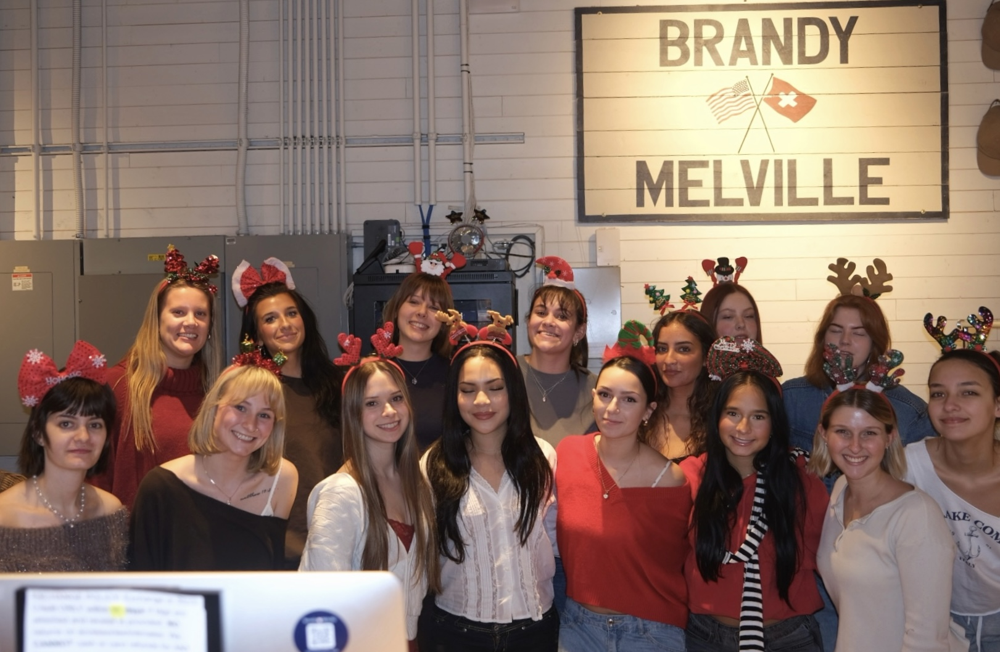
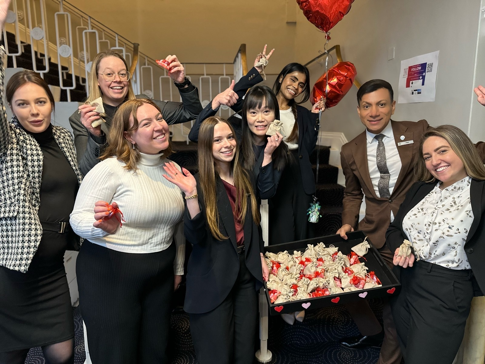
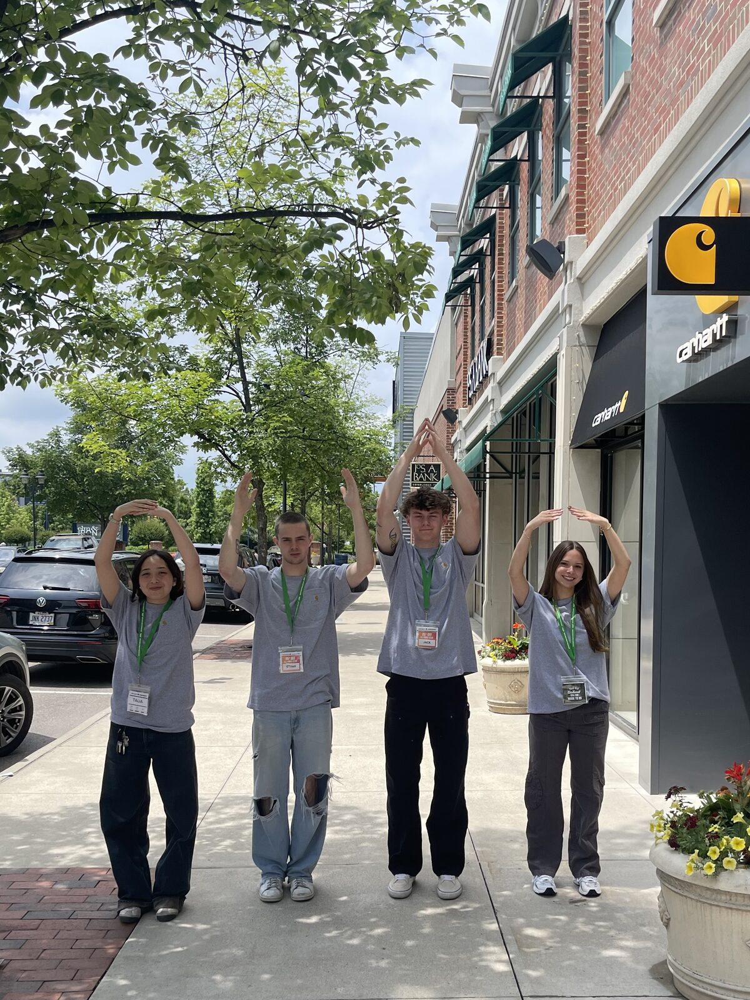

Isabella Kaswinkel
Business Analytics graduate student at Wake Forest University, bringing an HR and retail leadership background to People Analytics, Consumer Insights, and Brand Strategy — with a focus on fashion and beauty.
A quick hello
A 60–90 second walkthrough of who I am, what I'm building toward, and why the bridge between HR and analytics matters to me.
Where I've been, where I'm headed
My path is a hybrid one — years of hands-on HR and retail leadership experience now paired with a Master's in Business Analytics. Here's how the two connect.
Foundation
- HR Operations — managed employee records, compliance, and onboarding for 200+ staff at a Sheraton Grand hotel in London.
- Retail Leadership — led teams of up to 15 at Brandy Melville, owning daily operations and cash management.
- Cross-Cultural Collaboration — worked across an international team through a UK-based internship.
- Visual Merchandising — designed 100+ in-store displays to strengthen brand consistency.
Target Roles
- People Analytics — using workforce data to inform talent and retention strategy.
- Consumer Insights — translating behavioral and market data into decisions.
- Brand Strategy — particularly within fashion and beauty, where I already have floor-level brand experience.
Every HR file I organized and every merchandising display I built was, in hindsight, an exercise in reading people and translating that into a business outcome. Business Analytics gives that instinct a rigorous, quantitative backbone — I'm now equally comfortable running a regression in Python as I am facilitating conflict resolution on a hotel floor.
That combination is what I bring to People Analytics, Consumer Insights, and Brand Strategy roles: the data fluency to model a problem, and the retail and HR grounding to know which problem is actually worth solving.
Professional experience
A closer look at the retail and HR work behind the résumé — click the arrows to browse photos, or click a photo to view it full-size.

Brandy Melville
Led a retail team of up to 15 people as keyholder, controlling daily operations and cash management. Designed over 100 in-store merchandising and window displays to keep the brand consistent across every table and storefront.

HR Internship — Sheraton Grand London
Managed employee records and compliance for 200+ staff. Also helped run "Take Care" staff well-being initiatives, from Valentine's Day gifting to Friday Treat popcorn days, to keep the team engaged.

Carhartt Store Launch — Columbus, Ohio
Helped launch a brand-new Carhartt store in Columbus, Ohio from the ground up. Worked alongside a close-knit team from initial setup through opening day to get the store customer-ready.
Full résumé
Viewable below, or download the PDF directly.
Isabella Kaswinkel
M.S. Business Analytics candidate, Wake Forest University (Expected May 2027) · BBA Human Resource Management, Baylor University (May 2026).
Selected projects
Analytical and operational work spanning HR, retail, and data science coursework — click any project to view the full context, role, and materials.
What I'm watching in the market
Commercial awareness woven into the fields I'm targeting — swap these in for whatever trends you're actually tracking and want to speak to.
People Analytics
Companies are shifting from descriptive HR reporting to predictive retention and succession modeling — the same balance of cost efficiency and talent risk I worked through in my M&A capstone.
Consumer & Retail Data
Fashion and beauty brands increasingly rely on first-party behavioral data as third-party cookies fade, raising the value of on-the-ground merchandising and customer-experience insight.
Brand Strategy
Brand loyalty in fashion and beauty is increasingly built store-by-store and community-by-community, not just through national campaigns — which is exactly where floor-level retail experience becomes a strategic asset.
Toolkit
Analytics & Tools
- Python (Business Analytics)
- Tableau
- MOS Certified Excel
- Google Colaboratory
- Canva
People & HR
- People Analytics
- Employee Relations
- Conflict Resolution
- Team Leadership
- Strategic HR Management
Business & Strategy
- Consumer Behavior Analysis
- Data Visualization
- Strategic Management
- Project Coordination
- Business Communication
Cross-Cultural
- Cross-Cultural Communication
- Spanish (Intermediate)
- International Internship (UK)
- Adaptable / Fast Learner
Let's talk
Open to conversations about People Analytics, Consumer Insights, and Brand Strategy roles — especially in fashion and beauty.
- Emailin.kaswinkel@gmail.com
- Phone614-285-2834
- LinkedInlinkedin.com/in/isabellakaswinkel
- LocationWinston-Salem, NC